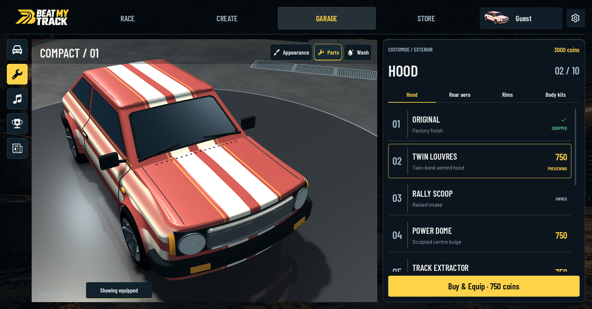
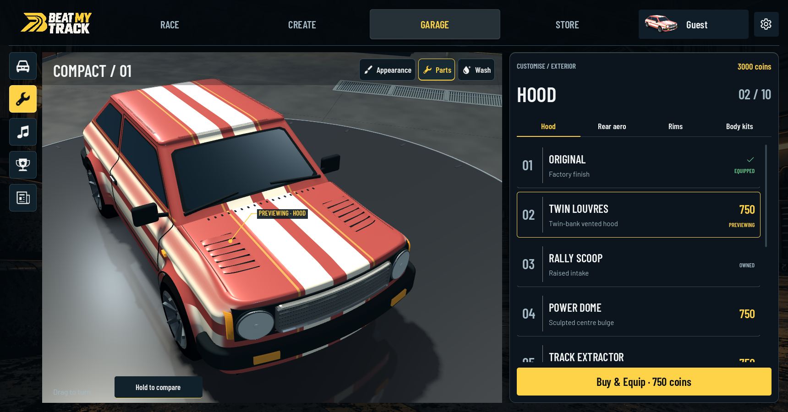
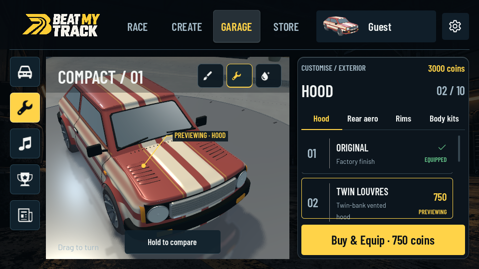
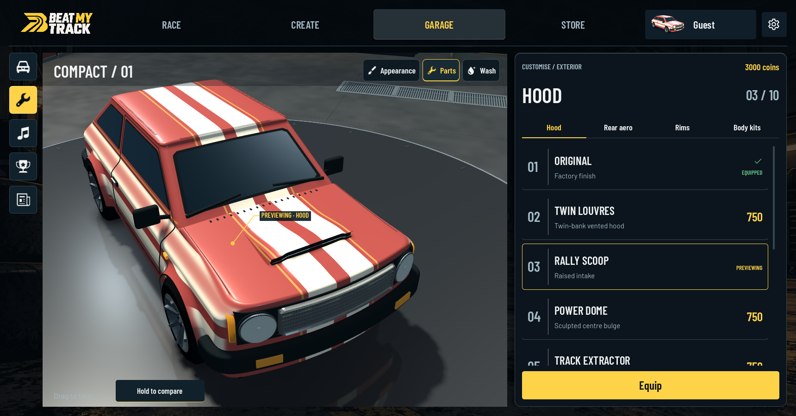
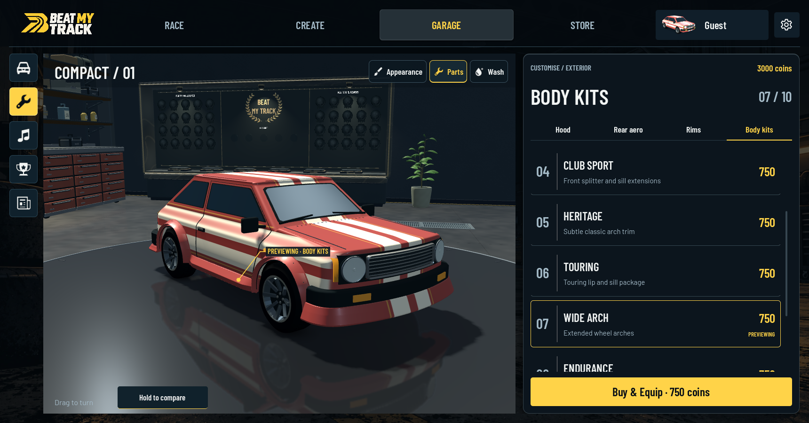
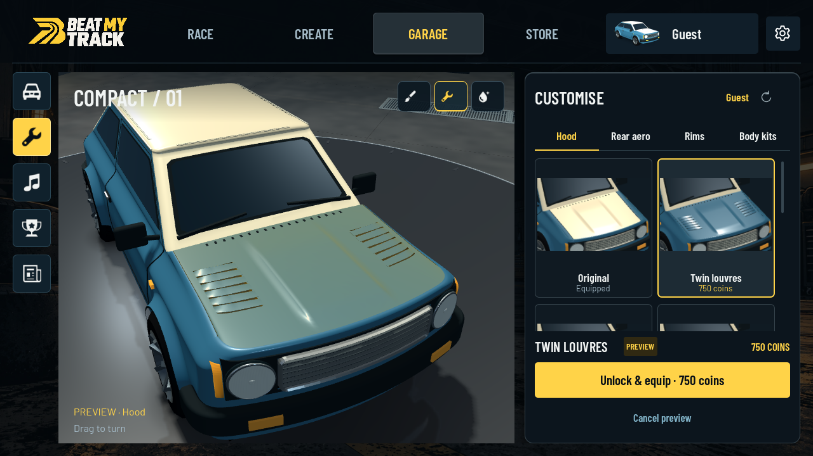

Garage live Parts configurator
Actual native App, 26 October 2026. The right panel uses numbered text rows; the main Garage is the only parts preview. Selecting a row previews immediately. The yellow action retains explicit purchase confirmation. All 43 existing options and their economy rules remain.
Finished layout: native Compatibility, 1720 × 900. Local reference-paint and 3000-coin wallet fixtures; no live account.
Hold to compare

Held: equipped hood, unchanged camera and selection.

Released outside: the selected louvres return.

960 × 540, desktop Mobile renderer.

Owned: Equip without another charge.

Body kits retains its low front/side camera.
Previous Parts layout

Previous UI, captured before this change.Verification covers pointer and keyboard holds, release outside, cancellation, focus loss, selection/account/navigation changes, saved state, purchase fences, all seven body fits and the retained Workshop/Wash/gesture flows. Actual commands and outcomes. Desktop renderers only; phone and translated-copy acceptance remain. No device attachment check/test, APK, real purchase, deployment or owner-process restart.